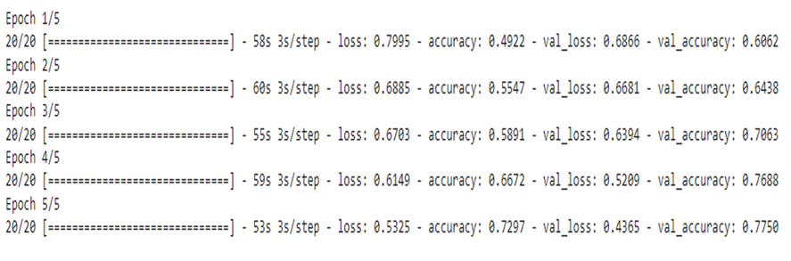
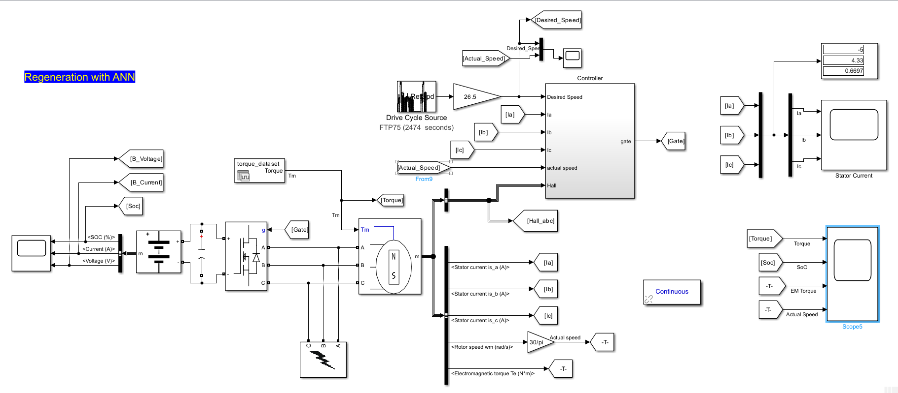
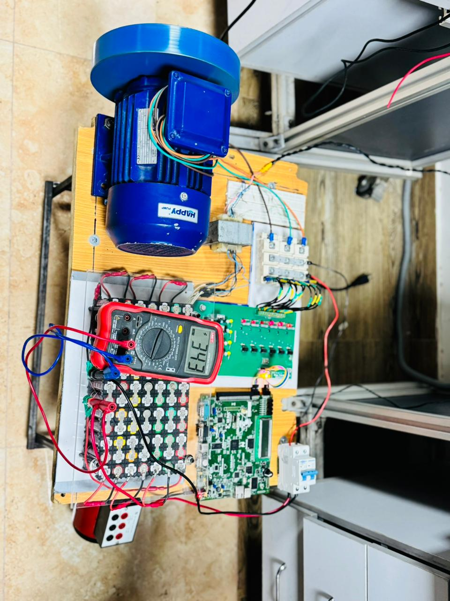
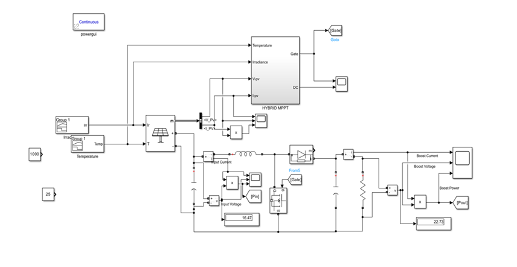

KENNETH AMOS
Electrical Engineer | Power Electronics & Industrial Automation
"Bridging the gap between research and real-world engineering — One project at a time"
About Me
I am Kenneth Amos, an Electrical Engineer specializing in power electronics, energy systems, and industrial automation. Graduating as the 2nd position holder of my batch from Hamdard University — a PEC-accredited institution ranked 43rd for Engineering and 55th overall in Pakistan (EduRank 2025) — I have built my career on a foundation of academic excellence and real-world experience. Since my first year of university I have been self-driven and financially independent, managing my personal expenses through private tutoring while pursuing my degree. Today I contribute both in academia as a Visiting Lab Engineer and in industry as a Trainee Electrical Engineer at Falcon Dynamic Engineering, where I have independently delivered automation solutions on industrial equipment. I am driven by a desire to build things that work in the real world — while continuously pushing my understanding through hands-on research and self-driven projects in sustainable energy and intelligent systems..

Technical Skills
Power Electronics
Automation / PLC
Embedded C++
MATLAB / Simulink
Experience
Trainee Electrical Engineer
Falcon Dynamic Engineering
October 2025 — Present | Islamabad, Pakistan
Working on industrial automation, PLC systems and real-world engineering project delivery.
- Sabroe Air Dryer Automation: Replaced original controller with LOGO PLC based control system, configured web access and provided remote administration.
- Ayub Medical Complex: Diagnosed and restored corrupted PLC logic of offline boiler system.
- Tender Documentation: Prepared technical documentation resulting in successful project bids.
- Developed practical expertise in PLC programming and industrial control systems.
NTDC Internship
Internee | July - August 2024
Islamabad, Pakistan
Exposure to Pakistan's national power transmission network and grid operations.
- National Control Centre observation of 500kV AC and 660kV HVDC transmission systems.
- Learned frequency control, grid stability and merit order dispatch.
- Observed Regional Control Centre operations including load balancing and feeder management.
- Exposure to Power Purchase Centre energy scheduling and pricing.
Electrical Engineering Intern
August - September 2025
Dharian Field & Islamabad HQ
- Designed electrical load distribution schematic for MARI House facility.
- Developed VFD simulation using MATLAB Simulink.
- Created field extension design documentation.
- Worked with Electrical, HSE, Petroleum and Laboratory departments.
Visiting Lab Engineer
Hamdard University
February 2026 — Present | Islamabad, Pakistan
Teaching laboratory sessions at Hamdard University on the recommendation of faculty, supervising students across multiple technical subjects.
- Teaching Digital Logic Design (DLD)
- Teaching Applied Physics
- Teaching Object Oriented Programming (OOP)
- Guiding students during laboratory activities, practical implementation and technical problem solving.
Volunteer Teacher
Rimsha Community School
Multiple Engagements | 2023 - 2026
Volunteered as a teacher at Rimsha Community School, supporting students through educational activities and learning sessions across multiple years.
- July – September 2023
- July – September 2024
- December 2025 – February 2026
- Assisted students with academic guidance and knowledge development.
Projects



Cancer Detection Model
[ Semester Project | Hamdard University ] Early and accurate cancer detection can be the difference between life and death. This project tackles that challenge by developing a Convolutional Neural Network (CNN) based image classification model capable of distinguishing between benign and malignant tissue from images of suspected cancerous areas. Built using TensorFlow and Keras with a ~10-layer CNN architecture, the model was trained on a publicly available Kaggle dataset with image augmentation techniques to improve generalization — producing a clinically relevant binary classification output.
Key Highlights:
• CNN-based binary image classifier (benign vs malignant)
• Built with TensorFlow & Keras (~10-layer CNN architecture)
• Trained on publicly available Kaggle medical imaging dataset
• Image augmentation for improved model generalization
• Adam optimizer for model training
Deep Learning Model Training & Evaluation
Model performance over 5 epochs demonstrating steady convergence.
The network achieved a peak validation accuracy of ~77% while successfully
reducing validation loss down to ~0.44 without overfitting.
Key Metrics Highlighted from the Charts:
Validation Accuracy: Reaches ~77% by epoch 4 (up from 61%).
Training Accuracy: Reaches ~73% by epoch 4 (up from 49%).
Validation Loss: Drops from ~0.69 to ~0.44.
Training Loss: Drops from ~0.80 to ~0.53.



Regenerative Braking System with ANN Control
[ Final Year Project | Hamdard University | Best EE Department Project — Open House ] Electric vehicles lose significant energy during braking — energy that is simply wasted as heat in conventional systems. This project addresses that challenge by designing a regenerative braking system that recovers kinetic energy during braking and converts it back into usable electrical energy. To push performance further, the conventional PI controller was replaced with an Artificial Neural Network (ANN) trained on PI-generated data — resulting in a more adaptive and efficient control strategy that outperforms traditional approaches under varying operating conditions. Project formally documented as an undergraduate thesis.
Key Highlights:
• Kinetic energy recovery through regenerative braking mechanism
• ANN-based controller replacing conventional PI control
• ANN trained on PI controller data for optimized performance
• Power electronics design & simulation in MATLAB/Simulink
• Awarded Best EE Department Project at University Open House
• Research paper currently in drafting phase
Hardware Testing & Embedded System Prototype
A functional test bench setup for evaluating an embedded motor control system.
The prototype integrates power electronics, signal processing boards, and live telemetry to monitor operational parameters during system testing.
Key Components Highlighted in the Setup:
Electric Motor: A blue industrial electric motor acting as the primary system load.
Digital Multimeter: Live telemetry interface displaying a real-time reading of 343.
Control & Power PCBs: Integrated microcontroller board paired with a power distribution stage.
Custom Wire Routing: Organized diagnostic wiring connecting the control logic to the power grid.



Hybrid Solar MPPT System
[ Ongoing Post-Graduation Project ] Solar panels rarely operate at peak efficiency under real-world conditions — temperature shifts, partial shading, and irradiance variation constantly push them away from their optimal operating point. Standard Perturb & Observe (P&O) MPPT is accurate but converges slowly under large disturbances, while Lookup Table methods are fast but lack fine precision. This project addresses both limitations through a hybrid switching algorithm — when the error between actual and tracked power exceeds a defined threshold, the system switches to the Lookup Table for rapid approximation of the Maximum Power Point, then hands off to P&O for precise fine-tuning. The result is faster convergence without sacrificing accuracy under varying environmental conditions.
Key Highlights:
•Hybrid switching between Lookup Table and Perturb & Observe (P&O) algorithms
• Lookup Table for fast MPP approximation under large disturbances
• P&O for precise fine-tuning after initial approximation
• Improved convergence speed and tracking accuracy
• Research paper in progress
P&O Boost Converter Simulation Results
<> Performance simulation of the dynamic response of a Boost Converter under Perturb & Observe (P&O) MPPT control over 2.0 seconds.Key Simulation Highlights:
• Boost Current: Fast initial transient response reaching ~5A, maintaining steady-state dynamic tracking between 4A and 5A during irradiance steps.
• Boost Voltage: Stabilizes near ~24V initially, dynamically adjusting down to ~18V–20V and back to ~22V under changing loads.
• Power Output: Peak power tracking reaches ~120W, demonstrating fast recovery and continuous MPP tracking across varied operating conditions.
Visual documentation restricted due to
project confidentiality guidelines.
Visual documentation restricted due to
project confidentiality guidelines.
Intelligent Greenhouse System
[ Semester Project | Hamdard University ] Maintaining precise environmental conditions in a greenhouse is a repetitive and error-prone task when done manually. This project solves that by building an automated monitoring and control system using Arduino and sensors to regulate temperature, humidity, and lighting in real time — removing the need for manual intervention and ensuring optimal conditions for plant growth.
Key Highlights:
•Arduino-based embedded control system
• Multi-sensor integration for temperature, humidity, and lighting
• Real-time automated environmental regulation
Research
High Efficiency Buck-Boost Converter using Intelligent PWM Control
This research focuses on designing high-efficiency DC-DC converters with optimized PWM algorithms for industrial applications. Simulation was performed using MATLAB/Simulink followed by hardware implementation using embedded controllers.